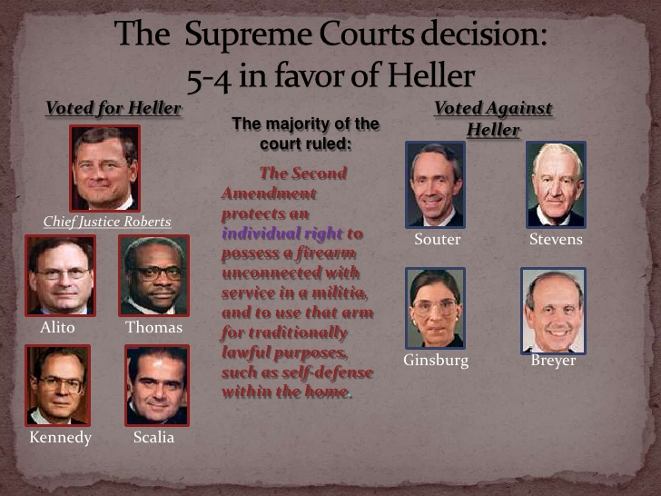

D.C. policeman Dick Heller sued the District of Columbia for a violation of the Second Amendment. The Second Amendment states that all people have the right to bear arms. The District of Columbia passed a law that banned possession of an unlicensed handgun. Only the police chief had the right to issue 1-year licenses for handguns. Applications had to be submitted in order to obtain licenses. Owned firearms also had to be unloaded and bound with a trigger-lock. Heller had submitted an application to keep his handgun at home for self-defense but the District rejected it.
Heller argued that the District of Columbia violated his Second Amendment right. He had sent an application to register a handgun to keep at his house for self-defense. The trigger-lock and unload requirement did not allow Heller to keep it for defense. Justice Breyer stated "D.C.'s law does not unreasonably interfere with Heller's right of self-defense." However, Justice Scalia replied stating "The Second Amendment protects Heller's right to possess a firearm, even if such possession is unconnected with service in a militia." The Second Amendment gives the right to possess a functional firearm. In the end the court ruled 5-4 in favor of Heller. They determined the trigger-lock and unload requirement was unconstitutional and to be removed, allowing Heller and others to license handguns to keep at home for self-defense.
Previous cases relating to gun rights include United States v. Cruikshank, Presser v. Illinois, and United States v. Miller. These cases limited the right to keep and bear arms for militia purposes to only certain types of weapons. The Second Amendment gives people the right to bear and keep ordinary weapons. It was decided that only certain militia weapons were considered ordinary weapons.
References
"DISTRICT OF COLUMBIA v. HELLER. (2008, March 18). Retrieved November 15, 2016, from https://www.law.cornell.edu/supct/html/07-290.ZS.html
District of Columbia v. Heller | Oyez. (n.d.). Retrieved November 28, 2016, from https://www.oyez.org/cases/2007/07-290